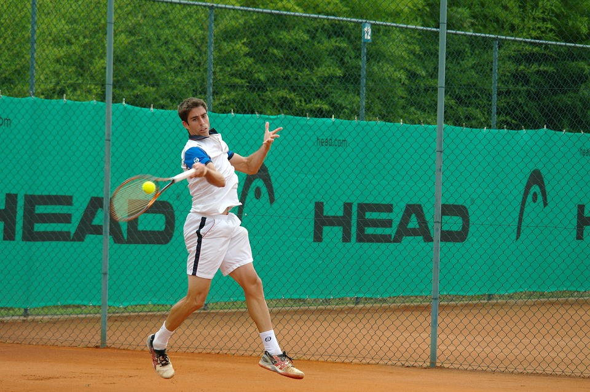

Rules of the Game
-In a games of singles, 2 players play against each other. In a game of doubles, it's 2 vs. 2.
-Each tennis player stands on opposite sides of the net and uses a tennis racket to hit the ball back and forth.
-The point starts with one of the players performing a serve to the box diagonal to them, and the other player attempting to return the serve.
-A serve must bounce in the service box before it can be returned.
-If the server misses the service box, this is considered a FAULT. In this case, the player has a second chance to put the ball in play. This is known as a SECOND SERVE.
-If the server misses the second serce, this will be classed as a DOUBLE FAULT and the server will lose the point.
-If the serve hits the net cord and counces inside the correct service box, this is called a LET and the serve is repeated.
-If the opponent fails to return a valid serve, the point goes to the server.
-Once in play, each player will attempt to win the point by keeping the ball within the court and preventing the opponent from getting the ball back or forcing them to make a mistake.
-The point will end when someone misses the ball, hits the ball out of the court or into the net, or the ball counces twice.
-If the ball hits the net cord and bounces over the net (on the correct side), the point continues.
-When in play, the player cannot touch the net or net post, or cross over onto the opponent's side of the court. If they do, this player will lose the point.
-A player can only hit the ball once before returning it to the other side of the net.
-The boundary lines of the court are considered part of the court. If a ball hits the line, it is considered to be IN.
Source: https://tenniscreative.com/tennis-rules/
.jpg)
